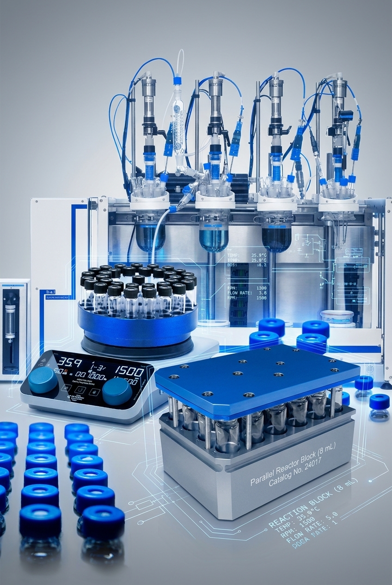

Hardware Integation
High Fidelity Liquor Assay & Lever Rule: Optimal System Diagnostic
Sample Parameters
arrow_drop_up
arrow_drop_down
arrow_drop_up
arrow_drop_down
24.0
AUTO-CALIBRATE
Vial Status
PRESENCE SENSOR
DETECTED
CAP INTEGRITY
SEALED
VIAL TEMP
22.4 °C
visibility
Automated parallel workflow

Ideal hardware platform for CRYSS integration
SYNCED
Recent Activity
17:31:20.844READ_TEMP: 22.43C
17:31:22.341READ_TEMP: 22.35C
17:31:29.848READ_TEMP: 22.36C
17:31:32.848READ_TEMP: 22.47C
17:31:35.848CHK_PRESS: 1.056 ATM
17:31:38.848CHK_PRESS: 1.028 ATM
17:31:49.345CHK_PRESS: 1.040 ATM
17:31:58.345CHK_PRESS: 1.030 ATM
17:32:07.345CHK_PRESS: 1.021 ATM
17:32:08.845CHK_PRESS: 1.059 ATM
17:32:19.345IDLE_PING_ACK
17:32:28.349READ_TEMP: 22.46C
17:32:31.349IDLE_PING_ACK
17:32:35.853READ_TEMP: 22.48C
17:32:47.848READ_TEMP: 22.41C
